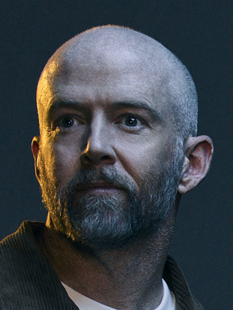

Integrantes
CHESTER

MIKE

BRAD
ROB

Linkin Park es una banda estadounidense de rock alternativo, nu metal y rap rock formada en Agoura Hills, California, en 1996. El grupo fue fundado por tres compañeros de secundaria: Mike Shinoda, Brad Delson y Rob Bourdon. Inicialmente se llamaron Xero, y grabaron un demo que no tuvo mayor repercusión. Poco a poco fueron sumando miembros, incluyendo a Joe Hahn, Dave "Phoenix" Farrell y Mark Wakefield como vocalista. Tras la salida de Wakefield, la banda inició una búsqueda intensiva de vocalistas. Fue entonces cuando Chester Bennington, originario de Arizona, se unió al grupo en 1999. La química entre Chester y Mike aportó una dualidad vocal muy distintiva: el canto melódico de Chester y el rap de Mike. Con su formación completa, decidieron cambiar su nombre a Linkin Park, un juego de palabras con Lincoln Park. En 2000, lanzaron su álbum debut, "Hybrid Theory", el cual fue un fenómeno global. Temas como "In the End", "Crawling" y "One Step Closer" se volvieron himnos del nu metal. "Hybrid Theory" se convirtió en uno de los discos debut más vendidos del siglo XXI. Gracias a su éxito, Linkin Park participó en múltiples festivales y giras mundiales. Su segundo álbum, "Meteora" (2003), consolidó su estatus en la industria musical. Canciones como "Numb", "Faint", "Breaking the Habit" y "Somewhere I Belong" dominaron las listas.
Álbumes icónicos como Hybrid Theory, Meteora, Minutes to Midnight y más.
Ir a discografia